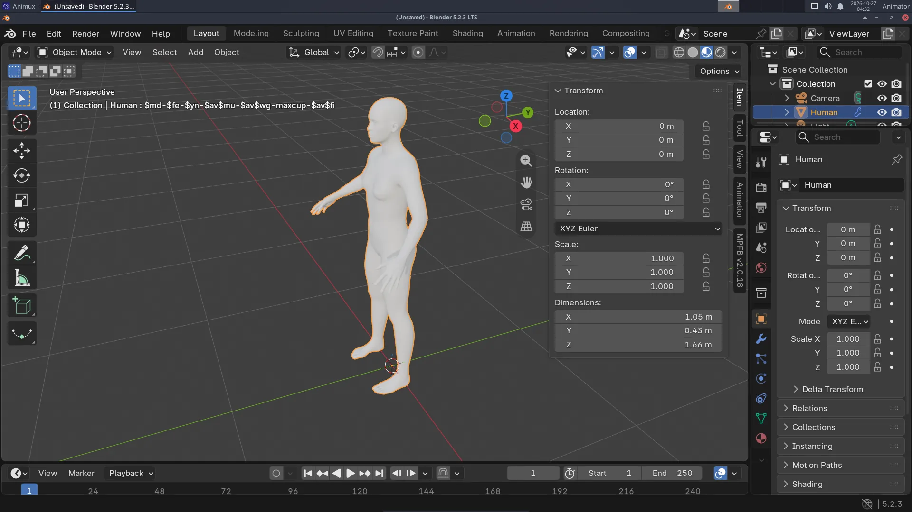
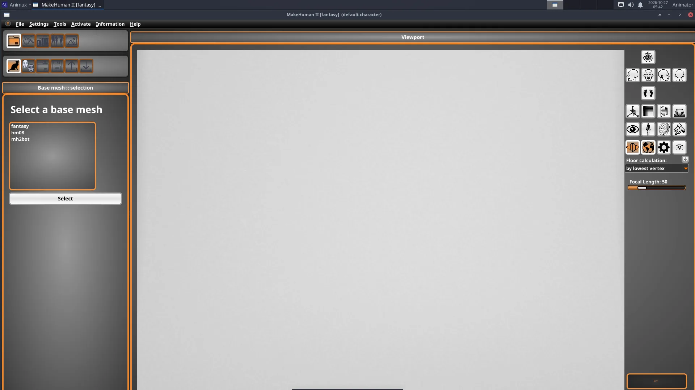

Modelling a believable human by hand takes weeks. With MPFB (in Blender) or MakeHuman II (on its own) you get one in minutes, with a skeleton for animation. See MakeHuman II and MPFB for the background.
Way 1: MPFB, directly in Blender (recommended)#
1. Create the human#
- Start Blender. Delete the cube (X → Delete).
- Move the mouse over the 3D viewport and press N: the side panel opens on the right. Click its MPFB tab.
- Open the New human section, then From scratch, and click Create human.


Press Numpad . (period) to zoom to the selected human.
2. Shape the body#
Open Model in the MPFB tab. The Macrodetails sliders change the whole body: gender, age, muscle, weight, height, proportions. The other groups (head, face, torso, arms, legs) change details. Move a slider and watch the body change.
3. Skin, eyes and hair#
Open Apply assets and pick a skin, eyes, eyebrows and eyelashes from its lists. Hair and clothes come from asset packs (see the note on asset packs).
Switch the viewport to Material Preview (Z → Material Preview) to see the skin.
4. Add a skeleton#
- With the human selected, open Rigging → Standard rig and click Add standard rig. An armature (skeleton) appears inside the body, and the body follows it.
- For more animation controls use Rigify instead (Rigging → Rigify), then Generate rigify rig.
5. Pose and animate#
- Click the armature (in the Outliner it is called Human.rig or similar).
- Switch to Pose Mode: Ctrl+Tab (or the mode menu at the top left of the viewport).
- Click a bone, for example the upper arm, and rotate it: R, move the mouse, click.
- Set a keyframe: press I with the mouse in the viewport.
- Go to frame 24, pose the arm differently, press I again. Press Space to play.
MPFB can also load ready poses and animations (Rigging → Poses / Animation), including Mixamo-compatible animation (Rigging → Snap to Mixamo).
Way 2: design in MakeHuman II, animate in Blender#
- Start 3D Animation → Modellers → MakeHuman 2, keep the base mesh fantasy, and shape the character with the modelling sliders.
- Save it: File → Save as
my-hero.mhm. - In Blender's MPFB tab: New human → From save file, choose
my-hero.mhm.
Or export from MakeHuman II as GLB and import it in Blender with File → Import → glTF 2.0. That brings the mesh and skeleton, but MPFB's sliders are then no longer available.


Tips#
- Keep characters at real size (a person is about 1.7 m in Blender).
- Save often: Ctrl+S.
- For lip sync, MPFB's Face operations offer Load face shape keys and Assign Lip Sync shape keys.